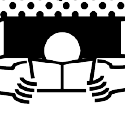

Home
Ausloggen
 Lily Buchbuch
Aufnehmen
Buchinfo eingeben(1/2)
Zitat aufnehmen(2/2)
Bist du bereit?
Hier sind unsere Aufnahmerichtlinien
Lieblingszeilen vorlesen
Buchtitel nennen
Autor_in nennen
Die Aufnahmelänge sollte nicht mehr als 60 Sekunden betragen.